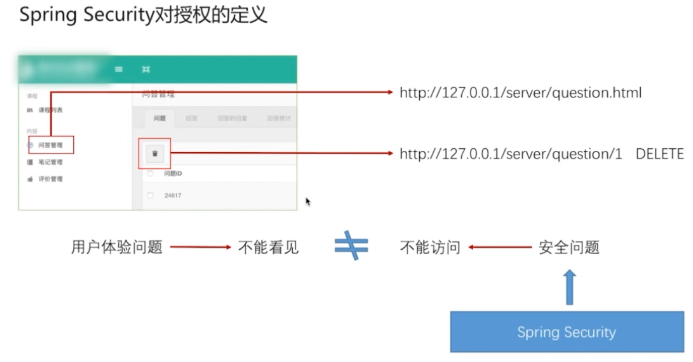
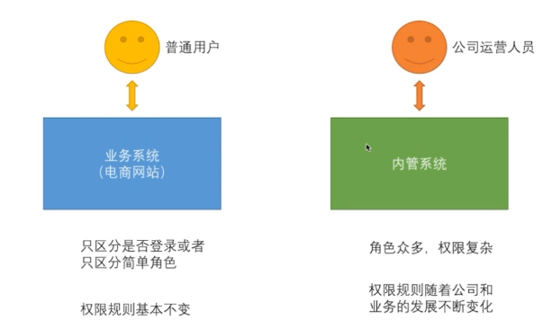
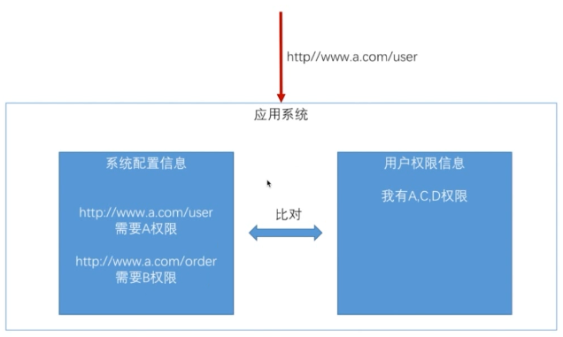
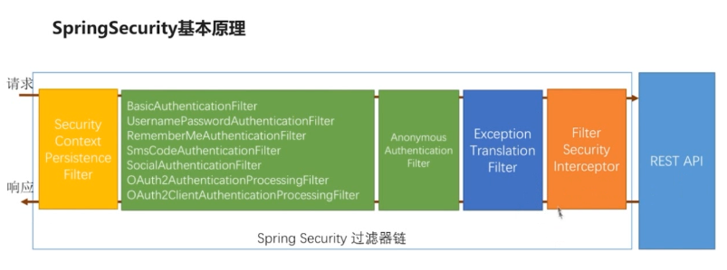
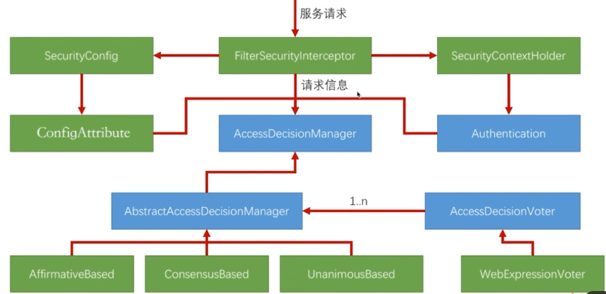
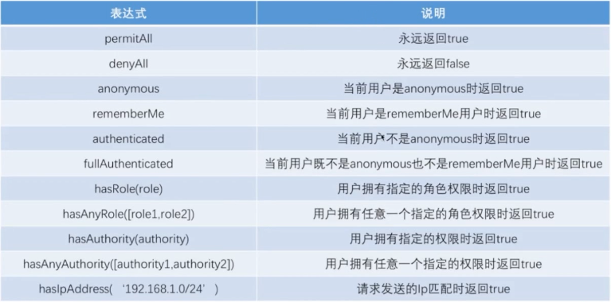
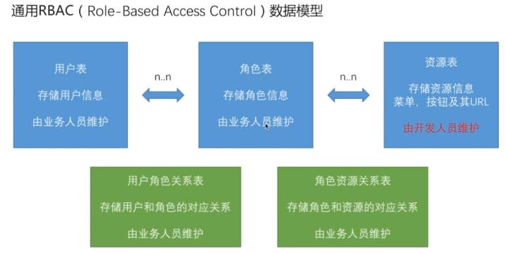

<!DOCTYPE html>
<html>
  <head>
    <meta charset="utf-8">
    <meta http-equiv="X-UA-Compatible" content="IE=edge">
    <meta name="viewport" content="width=device-width, initial-scale=1, maximum-scale=1">
    
    <meta name="theme-color" content="#33363b">
    <meta name="msapplication-TileColor" content="#33363b">
    
    
    
    <meta name="keywords" content="Life, ARIA, Hexo">
    
    
    <link rel="apple-touch-icon" sizes="180x180" href="/favicons/apple-touch-icon.png">
    
    
    <link rel="icon" type="image/png" sizes="192x192" href="/favicons/android-chrome-192x192.png">
    
    
    <link rel="icon" type="image/png" sizes="32x32" href="/favicons/favicon-32x32.png">
    
    
    <link rel="icon" type="image/png" sizes="16x16" href="/favicons/favicon-16x16.png">
    
    
    <link rel="mask-icon" href="/favicons/safari-pinned-tab.svg" color="#33363b">
    
    
    <link rel="manifest" href="/favicons/site.webmanifest">
    
    
    <meta name="msapplication-config" content="/favicons/browserconfig.xml">
    
    
    <link rel="alternate" href="/atom.xml" title="程序猿的日常" type="application/atom+xml" />
    
    
    <link rel="shortcut icon" type="image/x-icon" href="/favicons/favicon.ico">
    
    
    <link rel="stylesheet" type="text/css" href="/css/normalize.css">
    <link rel="stylesheet" type="text/css" href="/css/index.css">
    
    <link rel="stylesheet" type="text/css" href="/css/sidebar.css">
    
    
<link rel="stylesheet" type="text/css" href="/css/page.css">
<link rel="stylesheet" type="text/css" href="/css/post.css">

    <link rel="stylesheet" type="text/css" href="/css/custom.css">
    <link rel="stylesheet" type="text/css" href="/css/atom-one-dark.css">
    <link rel="stylesheet" type="text/css" href="/css/lightgallery.min.css">
    <script type="text/javascript" src="/js/jquery.min.js"></script>
    <script defer type="text/javascript" src="/js/util.js"></script>
    <script defer type="text/javascript" src="/js/scrollspy.js"></script>
    <script defer type="text/javascript" src="/js/fontawesome-all.min.js"></script>
    <script defer type="text/javascript" src="/js/lightgallery.min.js"></script>
    <script defer type="text/javascript" src="/js/lg-fullscreen.min.js"></script>
    <script defer type="text/javascript" src="/js/lg-hash.min.js"></script>
    <script defer type="text/javascript" src="/js/lg-pager.min.js"></script>
    <script defer type="text/javascript" src="/js/lg-thumbnail.min.js"></script>
    <script defer type="text/javascript" src="/js/lg-zoom.min.js"></script>
    
    <script defer src="/js/busuanzi.pure.mini.js"></script>
    
    
    <script defer type="text/javascript" src="/js/search.js"></script>
    <script type="text/javascript">
    $(document).ready(function () {
      var searchPath = "search.xml";
      if (searchPath.length === 0) {
        searchPath = "search.xml";
      }
      var path = "/" + searchPath;
      searchFunc(path, "search-input", "search-result");
    });
    </script>
    
    
    <script defer type="text/javascript" src="/js/index.js"></script>
    
    <script defer type="text/javascript" src="/js/custom.js"></script>
    <title>使用 Maven Module 搭建spring boot项目（整合Spring Security、Spring Social、spring OAuth）五 | 程序猿的日常</title>
  </head>
  <body itemscope itemtype="http://schema.org/WebPage" lang="default"  data-spy="scroll" data-target=".list-group">
    
<header id="header" class="header" style="background: #33363b;">
  <div class="container">
    <div class="header-container">
      <div class="header-title">
        <h1 class="title"><a href="/">程序猿的日常</a></h1>
        <h2 class="subtitle"></h2>
      </div>
      <div class="logo">
        
      </div>
    </div>
    
<nav id="nav" class="nav">
  <a id="nav-toggle" class="nav-toggle"><i class="fas fa-bars"></i></a>
  <ul id="menu">
    
    <li><a href="/">首页</a></li>
    
    <li><a href="/archives/">Archives</a></li>
    
  </ul>
</nav>


  </div>
</header>


    <main id="main" class="main">
      <div class="container">
        <div class="main-container">
          <div class="content">
            
<div id="post" class="post">
  
  <article class="post-container card" itemscope itemtype="http://schema.org/Article">
    <div class="post-block">
      <link itemprop="mainEntityOfPage" href="http://yoursite.com/2018/07/12/spring_security/5.SpringSecurityAuthorizationControllerAndIntegrateThymeleaf/">
      <span hidden itemprop="author" itemscope itemtype="http://schema.org/Person">
       <meta itemprop="name" content="龙门小左">
       <meta itemprop="description" content="">
       <meta itemprop="image" content="/images/avatar.png">
      </span>
      <span hidden itemprop="publisher" itemscope itemtype="http://schema.org/Organization">
       <meta itemprop="name" content="程序猿的日常">
      </span>
    </div>
    <header class="post-header">
      <h1 class="post-title" itemprop="name headline">使用 Maven Module 搭建spring boot项目（整合Spring Security、Spring Social、spring OAuth）五</h1>
      <div class="post-meta">
        
        <span class="post-date">
          <i class="far fa-calendar-plus"></i><span><time title="post-date" itemprop="dateCreated datePublished" datetime="2018-07-12T10:00:00+08:00">2018-07-12 10:00:00</time></span>
        </span>
        
        
        
      </div>
    </header>
    <main class="post-main" itemprop="articleBody">
      <h1 id="Spring-Security-权限控制及整合Thymeleaf引擎模板"><a href="#Spring-Security-权限控制及整合Thymeleaf引擎模板" class="headerlink" title="Spring Security 权限控制及整合Thymeleaf引擎模板"></a>Spring Security 权限控制及整合Thymeleaf引擎模板</h1><table>
<thead>
<tr>
<th>版本号</th>
<th>作者</th>
<th>日期</th>
<th>备注</th>
</tr>
</thead>
<tbody>
<tr>
<td>V0.1</td>
<td>谭键胜</td>
<td>2018-04-03</td>
<td>初稿</td>
</tr>
</tbody>
</table>
<hr>
<h2 id="Spring-Security-权限控制"><a href="#Spring-Security-权限控制" class="headerlink" title="Spring Security 权限控制"></a>Spring Security 权限控制</h2><h3 id="Spring-Security-对权限的定义"><a href="#Spring-Security-对权限的定义" class="headerlink" title="Spring Security 对权限的定义"></a>Spring Security 对权限的定义</h3><p></p>
<p></p>
<p>对权限的控制，可以通过简单的权限规则、复杂的权限规则进行自定义的配置</p>
<h4 id="简单规则（权限规则基本不变）"><a href="#简单规则（权限规则基本不变）" class="headerlink" title="简单规则（权限规则基本不变）"></a>简单规则（权限规则基本不变）</h4><p></p>
<h4 id="区分是否登陆"><a href="#区分是否登陆" class="headerlink" title="区分是否登陆"></a>区分是否登陆</h4><figure class="highlight java"><table><tr><td class="gutter"><pre><span class="line">1</span><br><span class="line">2</span><br><span class="line">3</span><br><span class="line">4</span><br><span class="line">5</span><br><span class="line">6</span><br><span class="line">7</span><br><span class="line">8</span><br><span class="line">9</span><br><span class="line">10</span><br><span class="line">11</span><br><span class="line">12</span><br></pre></td><td class="code"><pre><span class="line">.authorizeRequests()<span class="comment">//对请求做授权</span></span><br><span class="line">.antMatchers(SecurityConstants.DEFAULT_UNAUTHENTICATION_URL,</span><br><span class="line">      SecurityConstants.DEFAULT_LOGIN_PROCESSING_URL_MOBILE,</span><br><span class="line">      securityProperties.getBrowser().getLoginPage(),</span><br><span class="line">      SecurityConstants.DEFAULT_VALIDATE_CODE_URL_PREFIX+<span class="string">"/*"</span>,</span><br><span class="line">      securityProperties.getBrowser().getSignUpUrl(),</span><br><span class="line">      <span class="string">"/user/regist"</span>,</span><br><span class="line">      <span class="string">"/session/invalid"</span>,</span><br><span class="line">      securityProperties.getBrowser().getSignOutUrl()</span><br><span class="line">   ).permitAll() <span class="comment">//不用登陆就可以访问</span></span><br><span class="line">.anyRequest()<span class="comment">//任何请求</span></span><br><span class="line">.authenticated()<span class="comment">//都需要身份验证  //需要登陆才能访问</span></span><br></pre></td></tr></table></figure>
<h4 id="区分简单角色"><a href="#区分简单角色" class="headerlink" title="区分简单角色"></a>区分简单角色</h4><figure class="highlight java"><table><tr><td class="gutter"><pre><span class="line">1</span><br><span class="line">2</span><br><span class="line">3</span><br><span class="line">4</span><br><span class="line">5</span><br><span class="line">6</span><br><span class="line">7</span><br><span class="line">8</span><br><span class="line">9</span><br><span class="line">10</span><br><span class="line">11</span><br><span class="line">12</span><br><span class="line">13</span><br></pre></td><td class="code"><pre><span class="line">.authorizeRequests()<span class="comment">//对请求做授权</span></span><br><span class="line">.antMatchers(SecurityConstants.DEFAULT_UNAUTHENTICATION_URL,</span><br><span class="line">      SecurityConstants.DEFAULT_LOGIN_PROCESSING_URL_MOBILE,</span><br><span class="line">      securityProperties.getBrowser().getLoginPage(),</span><br><span class="line">      SecurityConstants.DEFAULT_VALIDATE_CODE_URL_PREFIX+<span class="string">"/*"</span>,</span><br><span class="line">      securityProperties.getBrowser().getSignUpUrl(),</span><br><span class="line">      <span class="string">"/user/regist"</span>,</span><br><span class="line">      <span class="string">"/session/invalid"</span>,</span><br><span class="line">      securityProperties.getBrowser().getSignOutUrl()</span><br><span class="line">   ).permitAll()</span><br><span class="line">.antMatchers(<span class="string">"/roles/*"</span>).hasRole(<span class="string">"ADMIN"</span>)<span class="comment">//有什么角色才能访问</span></span><br><span class="line">.anyRequest()<span class="comment">//任何请求</span></span><br><span class="line">.authenticated()<span class="comment">//都需要身份验证</span></span><br></pre></td></tr></table></figure>
<h4 id="Spring-Security-中用户的权限设置"><a href="#Spring-Security-中用户的权限设置" class="headerlink" title="Spring Security 中用户的权限设置"></a>Spring Security 中用户的权限设置</h4><figure class="highlight java"><table><tr><td class="gutter"><pre><span class="line">1</span><br><span class="line">2</span><br><span class="line">3</span><br><span class="line">4</span><br><span class="line">5</span><br><span class="line">6</span><br><span class="line">7</span><br><span class="line">8</span><br><span class="line">9</span><br><span class="line">10</span><br><span class="line">11</span><br></pre></td><td class="code"><pre><span class="line"><span class="meta">@Component</span></span><br><span class="line"><span class="keyword">public</span> <span class="class"><span class="keyword">class</span> <span class="title">MyUserDetailsService</span> <span class="keyword">implements</span> <span class="title">UserDetailsService</span>,<span class="title">SocialUserDetailsService</span> </span>&#123;</span><br><span class="line">    <span class="meta">@Override</span></span><br><span class="line">    <span class="function"><span class="keyword">public</span> SocialUserDetails <span class="title">loadUserByUserId</span><span class="params">(String userId)</span> <span class="keyword">throws</span> UsernameNotFoundException </span>&#123;</span><br><span class="line">        String password = passwordEncoder.encode(<span class="string">"123456"</span>);<span class="comment">//此时应该是用户登记密码时的流程</span></span><br><span class="line">        logger.info(<span class="string">"数据库密码是: "</span> + password);</span><br><span class="line">        <span class="keyword">return</span> <span class="keyword">new</span> SocialUser(userId,password,</span><br><span class="line">                <span class="keyword">true</span>,<span class="keyword">true</span>,<span class="keyword">true</span>,<span class="keyword">true</span>,</span><br><span class="line">                AuthorityUtils.commaSeparatedStringToAuthorityList(<span class="keyword">super</span>));</span><br><span class="line">    &#125;</span><br><span class="line">&#125;</span><br></pre></td></tr></table></figure>
<p>在生成<code>UserDetails</code> 和<code>SocialUserDetail</code> 接口实现类时，构造函数中都需要传入权限集合</p>
<p><code>Collection&lt;?extends GrantedAuthority&gt; authorities</code>类型的参数</p>
<p>上面代码中，通过<code>AuthorityUtils</code>工具类将字符串切割成权限集合</p>
<p><strong>在权限配置中，<code>antMatchers(&quot;/roles/*&quot;).hasRole(&quot;ADMIN&quot;),hasRole所对应的角色字符串为：ROLE_ADMIN</code></strong></p>
<p>(下文会解析为什么是有这样的命名规范)</p>
<p>在restful服务中，一个url通常对应不同httpmethod的请求，针对不同请求可以进行权限配置</p>
<figure class="highlight java"><table><tr><td class="gutter"><pre><span class="line">1</span><br></pre></td><td class="code"><pre><span class="line">.antMatchers(HttpMethod.GET,<span class="string">"/roles/*"</span>).hasRole(<span class="string">"ADMIN"</span>) <span class="comment">//针对URL的get请求作权限</span></span><br></pre></td></tr></table></figure>
<h3 id="Spring-Security-授权源码分析"><a href="#Spring-Security-授权源码分析" class="headerlink" title="Spring Security 授权源码分析"></a>Spring Security 授权源码分析</h3><h4 id="流程分析"><a href="#流程分析" class="headerlink" title="流程分析"></a>流程分析</h4><p></p>
<p><code>FilterSecurityInterceptor</code>与<code>ExceptionTranslationFilter</code>是授权相关的类。</p>
<p><code>FilterSecurityInterceptor</code>根据未能授权原因抛出异常给<code>ExceptionTranslationFilter</code>处理。 </p>
<p><code>AnonymousAuthenticationFilter</code>：（匿名认证过滤器）处于所有验证过滤器链中的最后一个</p>
<h4 id="授权分析"><a href="#授权分析" class="headerlink" title="授权分析"></a>授权分析</h4><p></p>
<p><code>AccessDecisionManager</code>(访问决定管理者)管理着一组Voter</p>
<p><code>AccessDecisionVoter</code>(投票者)。</p>
<p>投票逻辑：</p>
<ol>
<li><code>AffirmativeBased</code>(所有投票者中有一个过则通过，是spring 的默认实现)</li>
<li><code>ConsensusBased</code>(否定票与赞成票，多者胜出)</li>
<li><code>UnanimousBased</code>(只要有一个投票者不过则不过)</li>
</ol>
<p>SecurityConfig：配置信息</p>
<p>Authentication：验证信息，含用户权限信息</p>
<h4 id="源码分析"><a href="#源码分析" class="headerlink" title="源码分析"></a>源码分析</h4><p>1) <code>AnonymousAuthenticationFilter.java</code> 匿名认证过滤器，当其他认证都不通过，最后尝试此过滤器</p>
<figure class="highlight java"><table><tr><td class="gutter"><pre><span class="line">1</span><br><span class="line">2</span><br><span class="line">3</span><br><span class="line">4</span><br><span class="line">5</span><br><span class="line">6</span><br><span class="line">7</span><br><span class="line">8</span><br><span class="line">9</span><br><span class="line">10</span><br><span class="line">11</span><br><span class="line">12</span><br><span class="line">13</span><br><span class="line">14</span><br><span class="line">15</span><br><span class="line">16</span><br><span class="line">17</span><br><span class="line">18</span><br><span class="line">19</span><br><span class="line">20</span><br><span class="line">21</span><br><span class="line">22</span><br><span class="line">23</span><br><span class="line">24</span><br><span class="line">25</span><br><span class="line">26</span><br><span class="line">27</span><br><span class="line">28</span><br><span class="line">29</span><br><span class="line">30</span><br><span class="line">31</span><br><span class="line">32</span><br><span class="line">33</span><br></pre></td><td class="code"><pre><span class="line"><span class="keyword">public</span> <span class="class"><span class="keyword">class</span> <span class="title">AnonymousAuthenticationFilter</span></span>&#123;</span><br><span class="line"></span><br><span class="line"><span class="function"><span class="keyword">public</span> <span class="keyword">void</span> <span class="title">doFilter</span><span class="params">(ServletRequest req, ServletResponse res, FilterChain chain)</span></span></span><br><span class="line"><span class="function">      <span class="keyword">throws</span> IOException, ServletException </span>&#123;</span><br><span class="line">   <span class="comment">//判断在前面的认证过程中是否已经创建了Authentication</span></span><br><span class="line">   <span class="keyword">if</span> (SecurityContextHolder.getContext().getAuthentication() == <span class="keyword">null</span>) &#123;</span><br><span class="line">      <span class="comment">//创建出一个匿名Authentication</span></span><br><span class="line">SecurityContextHolder.getContext().setAuthentication(</span><br><span class="line">            createAuthentication((HttpServletRequest) req));</span><br><span class="line">   &#125;</span><br><span class="line">   <span class="keyword">else</span> &#123;</span><br><span class="line">      <span class="keyword">if</span> (logger.isDebugEnabled()) &#123;</span><br><span class="line">         logger.debug(<span class="string">"SecurityContextHolder not populated with anonymous token, as it already contained: '"</span></span><br><span class="line">               + SecurityContextHolder.getContext().getAuthentication() + <span class="string">"'"</span>);</span><br><span class="line">      &#125;</span><br><span class="line">   &#125;</span><br><span class="line"></span><br><span class="line">   chain.doFilter(req, res);</span><br><span class="line">&#125;</span><br><span class="line"></span><br><span class="line"><span class="function"><span class="keyword">protected</span> Authentication <span class="title">createAuthentication</span><span class="params">(HttpServletRequest request)</span> </span>&#123;</span><br><span class="line">   AnonymousAuthenticationToken auth = <span class="keyword">new</span> AnonymousAuthenticationToken(key,</span><br><span class="line">         principal, authorities);</span><br><span class="line">   auth.setDetails(authenticationDetailsSource.buildDetails(request));</span><br><span class="line"></span><br><span class="line">   <span class="keyword">return</span> auth;</span><br><span class="line">&#125;</span><br><span class="line"></span><br><span class="line"><span class="function"><span class="keyword">public</span> <span class="title">AnonymousAuthenticationFilter</span><span class="params">(String key)</span> </span>&#123;</span><br><span class="line">   <span class="keyword">this</span>(key, <span class="string">"anonymousUser"</span>, AuthorityUtils.createAuthorityList(<span class="string">"ROLE_ANONYMOUS"</span>));</span><br><span class="line">&#125;</span><br><span class="line"></span><br><span class="line">&#125;</span><br></pre></td></tr></table></figure>
<p>2) <code>FilterSecurityInterceptor.java</code></p>
<figure class="highlight java"><table><tr><td class="gutter"><pre><span class="line">1</span><br><span class="line">2</span><br><span class="line">3</span><br><span class="line">4</span><br><span class="line">5</span><br><span class="line">6</span><br><span class="line">7</span><br><span class="line">8</span><br><span class="line">9</span><br><span class="line">10</span><br><span class="line">11</span><br><span class="line">12</span><br><span class="line">13</span><br><span class="line">14</span><br><span class="line">15</span><br><span class="line">16</span><br><span class="line">17</span><br><span class="line">18</span><br><span class="line">19</span><br><span class="line">20</span><br><span class="line">21</span><br><span class="line">22</span><br><span class="line">23</span><br><span class="line">24</span><br><span class="line">25</span><br><span class="line">26</span><br><span class="line">27</span><br><span class="line">28</span><br><span class="line">29</span><br><span class="line">30</span><br><span class="line">31</span><br><span class="line">32</span><br><span class="line">33</span><br><span class="line">34</span><br><span class="line">35</span><br><span class="line">36</span><br><span class="line">37</span><br><span class="line">38</span><br><span class="line">39</span><br><span class="line">40</span><br></pre></td><td class="code"><pre><span class="line"><span class="keyword">public</span> <span class="class"><span class="keyword">class</span> <span class="title">FilterSecurityInterceptor</span> <span class="keyword">extends</span> <span class="title">AbstractSecurityInterceptor</span> <span class="keyword">implements</span></span></span><br><span class="line"><span class="class">      <span class="title">Filter</span> </span>&#123;</span><br><span class="line"></span><br><span class="line">   <span class="keyword">private</span> FilterInvocationSecurityMetadataSource securityMetadataSource;</span><br><span class="line">   <span class="keyword">private</span> <span class="keyword">boolean</span> observeOncePerRequest = <span class="keyword">true</span>;</span><br><span class="line"></span><br><span class="line">   <span class="function"><span class="keyword">public</span> <span class="keyword">void</span> <span class="title">doFilter</span><span class="params">(ServletRequest request, ServletResponse response,</span></span></span><br><span class="line"><span class="function"><span class="params">         FilterChain chain)</span> <span class="keyword">throws</span> IOException, ServletException </span>&#123;</span><br><span class="line">      FilterInvocation fi = <span class="keyword">new</span> FilterInvocation(request, response, chain);</span><br><span class="line">      invoke(fi);</span><br><span class="line">   &#125;</span><br><span class="line"></span><br><span class="line">   <span class="function"><span class="keyword">public</span> <span class="keyword">void</span> <span class="title">invoke</span><span class="params">(FilterInvocation fi)</span> <span class="keyword">throws</span> IOException, ServletException </span>&#123;</span><br><span class="line">      <span class="keyword">if</span> ((fi.getRequest() != <span class="keyword">null</span>)</span><br><span class="line">            &amp;&amp; (fi.getRequest().getAttribute(FILTER_APPLIED) != <span class="keyword">null</span>)</span><br><span class="line">            &amp;&amp; observeOncePerRequest) &#123;</span><br><span class="line">         <span class="comment">// filter already applied to this request and user wants us to observe</span></span><br><span class="line">         <span class="comment">// once-per-request handling, so don't re-do security checking</span></span><br><span class="line">         fi.getChain().doFilter(fi.getRequest(), fi.getResponse());</span><br><span class="line">      &#125;</span><br><span class="line">      <span class="keyword">else</span> &#123;</span><br><span class="line">         <span class="comment">// first time this request being called, so perform security checking</span></span><br><span class="line">         <span class="keyword">if</span> (fi.getRequest() != <span class="keyword">null</span>) &#123;</span><br><span class="line">            fi.getRequest().setAttribute(FILTER_APPLIED, Boolean.TRUE);</span><br><span class="line">         &#125;</span><br><span class="line">         <span class="comment">//权限认证在这里面完成，如果这里抛出异常会给ExceptionTranslationFilter处理</span></span><br><span class="line">         InterceptorStatusToken token = <span class="keyword">super</span>.beforeInvocation(fi);</span><br><span class="line"></span><br><span class="line">         <span class="keyword">try</span> &#123;</span><br><span class="line"><span class="comment">//服务器中的服务</span></span><br><span class="line">            fi.getChain().doFilter(fi.getRequest(), fi.getResponse());</span><br><span class="line">         &#125;</span><br><span class="line">         <span class="keyword">finally</span> &#123;</span><br><span class="line">            <span class="keyword">super</span>.finallyInvocation(token);</span><br><span class="line">         &#125;</span><br><span class="line"></span><br><span class="line">         <span class="keyword">super</span>.afterInvocation(token, <span class="keyword">null</span>);</span><br><span class="line">      &#125;</span><br><span class="line">   &#125;</span><br><span class="line">&#125;</span><br></pre></td></tr></table></figure>
<p>3) <code>AbstractSecurityInterceptor.java</code></p>
<figure class="highlight java"><table><tr><td class="gutter"><pre><span class="line">1</span><br><span class="line">2</span><br><span class="line">3</span><br><span class="line">4</span><br><span class="line">5</span><br><span class="line">6</span><br><span class="line">7</span><br><span class="line">8</span><br><span class="line">9</span><br><span class="line">10</span><br><span class="line">11</span><br><span class="line">12</span><br><span class="line">13</span><br><span class="line">14</span><br><span class="line">15</span><br><span class="line">16</span><br><span class="line">17</span><br><span class="line">18</span><br><span class="line">19</span><br><span class="line">20</span><br><span class="line">21</span><br><span class="line">22</span><br><span class="line">23</span><br><span class="line">24</span><br><span class="line">25</span><br><span class="line">26</span><br><span class="line">27</span><br><span class="line">28</span><br><span class="line">29</span><br><span class="line">30</span><br><span class="line">31</span><br><span class="line">32</span><br><span class="line">33</span><br><span class="line">34</span><br><span class="line">35</span><br><span class="line">36</span><br><span class="line">37</span><br><span class="line">38</span><br><span class="line">39</span><br><span class="line">40</span><br><span class="line">41</span><br><span class="line">42</span><br><span class="line">43</span><br><span class="line">44</span><br><span class="line">45</span><br><span class="line">46</span><br><span class="line">47</span><br><span class="line">48</span><br><span class="line">49</span><br><span class="line">50</span><br><span class="line">51</span><br><span class="line">52</span><br><span class="line">53</span><br><span class="line">54</span><br><span class="line">55</span><br><span class="line">56</span><br><span class="line">57</span><br><span class="line">58</span><br><span class="line">59</span><br><span class="line">60</span><br><span class="line">61</span><br><span class="line">62</span><br><span class="line">63</span><br><span class="line">64</span><br><span class="line">65</span><br><span class="line">66</span><br><span class="line">67</span><br><span class="line">68</span><br><span class="line">69</span><br><span class="line">70</span><br><span class="line">71</span><br><span class="line">72</span><br><span class="line">73</span><br><span class="line">74</span><br><span class="line">75</span><br><span class="line">76</span><br><span class="line">77</span><br><span class="line">78</span><br><span class="line">79</span><br><span class="line">80</span><br><span class="line">81</span><br><span class="line">82</span><br><span class="line">83</span><br><span class="line">84</span><br><span class="line">85</span><br><span class="line">86</span><br><span class="line">87</span><br><span class="line">88</span><br><span class="line">89</span><br><span class="line">90</span><br><span class="line">91</span><br><span class="line">92</span><br><span class="line">93</span><br><span class="line">94</span><br><span class="line">95</span><br><span class="line">96</span><br></pre></td><td class="code"><pre><span class="line"><span class="keyword">public</span> <span class="keyword">abstract</span> <span class="class"><span class="keyword">class</span> <span class="title">AbstractSecurityInterceptor</span></span>&#123;</span><br><span class="line"><span class="function"><span class="keyword">protected</span> InterceptorStatusToken <span class="title">beforeInvocation</span><span class="params">(Object object)</span> </span>&#123;</span><br><span class="line">   Assert.notNull(object, <span class="string">"Object was null"</span>);</span><br><span class="line">   <span class="keyword">final</span> <span class="keyword">boolean</span> debug = logger.isDebugEnabled();</span><br><span class="line"></span><br><span class="line">   <span class="keyword">if</span> (!getSecureObjectClass().isAssignableFrom(object.getClass())) &#123;</span><br><span class="line">      <span class="keyword">throw</span> <span class="keyword">new</span> IllegalArgumentException(</span><br><span class="line">            <span class="string">"Security invocation attempted for object "</span></span><br><span class="line">                  + object.getClass().getName()</span><br><span class="line">                  + <span class="string">" but AbstractSecurityInterceptor only configured to support secure objects of type: "</span></span><br><span class="line">                  + getSecureObjectClass());</span><br><span class="line">   &#125;</span><br><span class="line">   <span class="comment">//从配置信息中获取信息，需要的权限，封装成ConfigAttribute</span></span><br><span class="line">   Collection&lt;ConfigAttribute&gt; attributes = <span class="keyword">this</span>.obtainSecurityMetadataSource()</span><br><span class="line">         .getAttributes(object);</span><br><span class="line"></span><br><span class="line">   <span class="keyword">if</span> (attributes == <span class="keyword">null</span> || attributes.isEmpty()) &#123;</span><br><span class="line">      <span class="keyword">if</span> (rejectPublicInvocations) &#123;</span><br><span class="line">         <span class="keyword">throw</span> <span class="keyword">new</span> IllegalArgumentException(</span><br><span class="line">               <span class="string">"Secure object invocation "</span></span><br><span class="line">                     + object</span><br><span class="line">                     + <span class="string">" was denied as public invocations are not allowed via this interceptor. "</span></span><br><span class="line">                     + <span class="string">"This indicates a configuration error because the "</span></span><br><span class="line">                     + <span class="string">"rejectPublicInvocations property is set to 'true'"</span>);</span><br><span class="line">      &#125;</span><br><span class="line"></span><br><span class="line">      <span class="keyword">if</span> (debug) &#123;</span><br><span class="line">         logger.debug(<span class="string">"Public object - authentication not attempted"</span>);</span><br><span class="line">      &#125;</span><br><span class="line"></span><br><span class="line">      publishEvent(<span class="keyword">new</span> PublicInvocationEvent(object));</span><br><span class="line"></span><br><span class="line">      <span class="keyword">return</span> <span class="keyword">null</span>; <span class="comment">// no further work post-invocation</span></span><br><span class="line">   &#125;</span><br><span class="line"></span><br><span class="line">   <span class="keyword">if</span> (debug) &#123;</span><br><span class="line">      logger.debug(<span class="string">"Secure object: "</span> + object + <span class="string">"; Attributes: "</span> + attributes);</span><br><span class="line">   &#125;</span><br><span class="line"></span><br><span class="line">   <span class="keyword">if</span> (SecurityContextHolder.getContext().getAuthentication() == <span class="keyword">null</span>) &#123;</span><br><span class="line">      credentialsNotFound(messages.getMessage(</span><br><span class="line">            <span class="string">"AbstractSecurityInterceptor.authenticationNotFound"</span>,</span><br><span class="line">            <span class="string">"An Authentication object was not found in the SecurityContext"</span>),</span><br><span class="line">            object, attributes);</span><br><span class="line">   &#125;</span><br><span class="line">   <span class="comment">//获取当前的Authentication</span></span><br><span class="line">   Authentication authenticated = authenticateIfRequired();</span><br><span class="line"></span><br><span class="line">   <span class="comment">// Attempt authorization</span></span><br><span class="line">   <span class="keyword">try</span> &#123;</span><br><span class="line"><span class="comment">//获得Authentication、当前请求信息和ConfigAttribute后，进行投票</span></span><br><span class="line">      <span class="keyword">this</span>.accessDecisionManager.decide(authenticated, object, attributes);</span><br><span class="line">   &#125;</span><br><span class="line">   <span class="keyword">catch</span> (AccessDeniedException accessDeniedException) &#123;</span><br><span class="line">      publishEvent(<span class="keyword">new</span> AuthorizationFailureEvent(object, attributes, authenticated,</span><br><span class="line">            accessDeniedException));</span><br><span class="line"></span><br><span class="line">      <span class="keyword">throw</span> accessDeniedException;</span><br><span class="line">   &#125;</span><br><span class="line"></span><br><span class="line">   <span class="keyword">if</span> (debug) &#123;</span><br><span class="line">      logger.debug(<span class="string">"Authorization successful"</span>);</span><br><span class="line">   &#125;</span><br><span class="line"></span><br><span class="line">   <span class="keyword">if</span> (publishAuthorizationSuccess) &#123;</span><br><span class="line">      publishEvent(<span class="keyword">new</span> AuthorizedEvent(object, attributes, authenticated));</span><br><span class="line">   &#125;</span><br><span class="line"></span><br><span class="line">   <span class="comment">// Attempt to run as a different user</span></span><br><span class="line">   Authentication runAs = <span class="keyword">this</span>.runAsManager.buildRunAs(authenticated, object,</span><br><span class="line">         attributes);</span><br><span class="line"></span><br><span class="line">   <span class="keyword">if</span> (runAs == <span class="keyword">null</span>) &#123;</span><br><span class="line">      <span class="keyword">if</span> (debug) &#123;</span><br><span class="line">         logger.debug(<span class="string">"RunAsManager did not change Authentication object"</span>);</span><br><span class="line">      &#125;</span><br><span class="line"></span><br><span class="line">      <span class="comment">// no further work post-invocation</span></span><br><span class="line">      <span class="keyword">return</span> <span class="keyword">new</span> InterceptorStatusToken(SecurityContextHolder.getContext(), <span class="keyword">false</span>,</span><br><span class="line">            attributes, object);</span><br><span class="line">   &#125;</span><br><span class="line">   <span class="keyword">else</span> &#123;</span><br><span class="line">      <span class="keyword">if</span> (debug) &#123;</span><br><span class="line">         logger.debug(<span class="string">"Switching to RunAs Authentication: "</span> + runAs);</span><br><span class="line">      &#125;</span><br><span class="line"></span><br><span class="line">      SecurityContext origCtx = SecurityContextHolder.getContext();</span><br><span class="line">      SecurityContextHolder.setContext(SecurityContextHolder.createEmptyContext());</span><br><span class="line">      SecurityContextHolder.getContext().setAuthentication(runAs);</span><br><span class="line"></span><br><span class="line">      <span class="comment">// need to revert to token.Authenticated post-invocation</span></span><br><span class="line">      <span class="keyword">return</span> <span class="keyword">new</span> InterceptorStatusToken(origCtx, <span class="keyword">true</span>, attributes, object);</span><br><span class="line">   &#125;</span><br><span class="line">&#125;</span><br><span class="line"></span><br><span class="line">&#125;</span><br></pre></td></tr></table></figure>
<p>4) <code>AffirmativeBased.java</code></p>
<figure class="highlight java"><table><tr><td class="gutter"><pre><span class="line">1</span><br><span class="line">2</span><br><span class="line">3</span><br><span class="line">4</span><br><span class="line">5</span><br><span class="line">6</span><br><span class="line">7</span><br><span class="line">8</span><br><span class="line">9</span><br><span class="line">10</span><br><span class="line">11</span><br><span class="line">12</span><br><span class="line">13</span><br><span class="line">14</span><br><span class="line">15</span><br><span class="line">16</span><br><span class="line">17</span><br><span class="line">18</span><br><span class="line">19</span><br><span class="line">20</span><br><span class="line">21</span><br><span class="line">22</span><br><span class="line">23</span><br><span class="line">24</span><br><span class="line">25</span><br><span class="line">26</span><br><span class="line">27</span><br><span class="line">28</span><br><span class="line">29</span><br><span class="line">30</span><br><span class="line">31</span><br><span class="line">32</span><br><span class="line">33</span><br><span class="line">34</span><br><span class="line">35</span><br><span class="line">36</span><br><span class="line">37</span><br><span class="line">38</span><br><span class="line">39</span><br></pre></td><td class="code"><pre><span class="line"><span class="keyword">public</span> <span class="class"><span class="keyword">class</span> <span class="title">AffirmativeBased</span> <span class="keyword">extends</span> <span class="title">AbstractAccessDecisionManager</span> </span>&#123;</span><br><span class="line"><span class="function"><span class="keyword">public</span> <span class="keyword">void</span> <span class="title">decide</span><span class="params">(Authentication authentication, Object object,</span></span></span><br><span class="line"><span class="function"><span class="params">      Collection&lt;ConfigAttribute&gt; configAttributes)</span> <span class="keyword">throws</span> AccessDeniedException </span>&#123;</span><br><span class="line">   <span class="keyword">int</span> deny = <span class="number">0</span>;</span><br><span class="line">   <span class="comment">//所有的投票者投票</span></span><br><span class="line">   <span class="keyword">for</span> (AccessDecisionVoter voter : getDecisionVoters()) &#123;</span><br><span class="line"><span class="comment">//投票后返回投票结果</span></span><br><span class="line">      <span class="keyword">int</span> result = voter.vote(authentication, object, configAttributes);</span><br><span class="line"></span><br><span class="line">      <span class="keyword">if</span> (logger.isDebugEnabled()) &#123;</span><br><span class="line">         logger.debug(<span class="string">"Voter: "</span> + voter + <span class="string">", returned: "</span> + result);</span><br><span class="line">      &#125;</span><br><span class="line"></span><br><span class="line">      <span class="keyword">switch</span> (result) &#123;</span><br><span class="line"><span class="comment">//有一个投票者则通过</span></span><br><span class="line">      <span class="keyword">case</span> AccessDecisionVoter.ACCESS_GRANTED:</span><br><span class="line">         <span class="keyword">return</span>;</span><br><span class="line"></span><br><span class="line">      <span class="keyword">case</span> AccessDecisionVoter.ACCESS_DENIED:</span><br><span class="line">         deny++;</span><br><span class="line"></span><br><span class="line">         <span class="keyword">break</span>;</span><br><span class="line"></span><br><span class="line">      <span class="keyword">default</span>:</span><br><span class="line">         <span class="keyword">break</span>;</span><br><span class="line">      &#125;</span><br><span class="line">   &#125;</span><br><span class="line"></span><br><span class="line">   <span class="keyword">if</span> (deny &gt; <span class="number">0</span>) &#123;</span><br><span class="line">      <span class="keyword">throw</span> <span class="keyword">new</span> AccessDeniedException(messages.getMessage(</span><br><span class="line">            <span class="string">"AbstractAccessDecisionManager.accessDenied"</span>, <span class="string">"Access is denied"</span>));</span><br><span class="line">   &#125;</span><br><span class="line"></span><br><span class="line">   <span class="comment">// To get this far, every AccessDecisionVoter abstained</span></span><br><span class="line">   checkAllowIfAllAbstainDecisions();</span><br><span class="line">&#125;</span><br><span class="line"></span><br><span class="line"></span><br><span class="line">&#125;</span><br></pre></td></tr></table></figure>
<h4 id="分析hasRole角色配置"><a href="#分析hasRole角色配置" class="headerlink" title="分析hasRole角色配置"></a>分析hasRole角色配置</h4><p>前面配置提到 :</p>
<p><code>antMatchers(&quot;/roles/*&quot;).hasRole(&quot;ADMIN&quot;),hasRole所对应的角色字符串为：ROLE_ADMIN</code></p>
<p><code>ExpressionUrlAuthorizationConfigurer.java</code>源码跟踪</p>
<figure class="highlight java"><table><tr><td class="gutter"><pre><span class="line">1</span><br><span class="line">2</span><br><span class="line">3</span><br><span class="line">4</span><br><span class="line">5</span><br><span class="line">6</span><br><span class="line">7</span><br><span class="line">8</span><br><span class="line">9</span><br><span class="line">10</span><br><span class="line">11</span><br><span class="line">12</span><br><span class="line">13</span><br><span class="line">14</span><br><span class="line">15</span><br></pre></td><td class="code"><pre><span class="line"><span class="keyword">public</span> <span class="keyword">final</span> <span class="class"><span class="keyword">class</span> <span class="title">ExpressionUrlAuthorizationConfigurer</span></span>&#123;</span><br><span class="line"><span class="keyword">public</span> ExpressionUrlAuthorizationConfigurer&lt;H&gt;.<span class="function">ExpressionInterceptUrlRegistry <span class="title">hasRole</span><span class="params">(String role)</span> </span>&#123;</span><br><span class="line">    <span class="keyword">return</span> <span class="keyword">this</span>.access(ExpressionUrlAuthorizationConfigurer.hasRole(role));</span><br><span class="line">&#125;</span><br><span class="line"></span><br><span class="line"><span class="function"><span class="keyword">private</span> <span class="keyword">static</span> String <span class="title">hasRole</span><span class="params">(String role)</span> </span>&#123;</span><br><span class="line">    Assert.notNull(role, <span class="string">"role cannot be null"</span>);</span><br><span class="line">    <span class="keyword">if</span>(role.startsWith(<span class="string">"ROLE_"</span>)) &#123;</span><br><span class="line">        <span class="keyword">throw</span> <span class="keyword">new</span> IllegalArgumentException(<span class="string">"role should not start with 'ROLE_' since it is automatically inserted. Got '"</span> + role + <span class="string">"'"</span>);</span><br><span class="line">    &#125; <span class="keyword">else</span> &#123;</span><br><span class="line"><span class="comment">//最终返回sping security 需要判断的一个完整的表达式</span></span><br><span class="line">        <span class="keyword">return</span> <span class="string">"hasRole('ROLE_"</span> + role + <span class="string">"')"</span>;</span><br><span class="line">    &#125;</span><br><span class="line">&#125;</span><br><span class="line">&#125;</span><br></pre></td></tr></table></figure>
<p>因此在<code>hasRole</code>中只需要配置角色名称<code>ADMIN</code>，而配置用户角色权限的时候，需要配置<code>ROLE_ADMIN</code></p>
<h3 id="Spring-Security-权限表达式"><a href="#Spring-Security-权限表达式" class="headerlink" title="Spring Security 权限表达式"></a>Spring Security 权限表达式</h3><p></p>
<p>在spring security中，每个权限表达式都对应一个方法，这个方法跟在<code>antMatchers(&quot;/roles/*&quot;)</code>，</p>
<p>不支持<code>.antMatchers(&quot;/roles/*&quot;).hasRole(&quot;ADMIN&quot;)</code>多个并列调用。</p>
<p>但是可以使用另外一个提供的方法处理并列逻辑</p>
<figure class="highlight java"><table><tr><td class="gutter"><pre><span class="line">1</span><br><span class="line">2</span><br></pre></td><td class="code"><pre><span class="line">antMatchers(<span class="string">"/roles/*"</span>)</span><br><span class="line">.access(<span class="string">"hasRole('ADMIN') and hasIpAddress('192.168.1.235')"</span>)</span><br></pre></td></tr></table></figure>
<h3 id="复杂规则权限开发"><a href="#复杂规则权限开发" class="headerlink" title="复杂规则权限开发"></a>复杂规则权限开发</h3><h4 id="RBAC模型"><a href="#RBAC模型" class="headerlink" title="RBAC模型"></a>RBAC模型</h4><p></p>
<h4 id="开发自定义的权限模块"><a href="#开发自定义的权限模块" class="headerlink" title="开发自定义的权限模块"></a>开发自定义的权限模块</h4><p>新建一个子模块项目，命名为<code>chu-authorize</code></p>
<p><code>pom.xml</code> 文件定义</p>
<figure class="highlight xml"><table><tr><td class="gutter"><pre><span class="line">1</span><br><span class="line">2</span><br><span class="line">3</span><br><span class="line">4</span><br><span class="line">5</span><br><span class="line">6</span><br><span class="line">7</span><br><span class="line">8</span><br><span class="line">9</span><br><span class="line">10</span><br><span class="line">11</span><br><span class="line">12</span><br><span class="line">13</span><br><span class="line">14</span><br><span class="line">15</span><br><span class="line">16</span><br><span class="line">17</span><br><span class="line">18</span><br><span class="line">19</span><br><span class="line">20</span><br><span class="line">21</span><br><span class="line">22</span><br><span class="line">23</span><br><span class="line">24</span><br></pre></td><td class="code"><pre><span class="line"><span class="tag">&lt;<span class="name">project</span> <span class="attr">xmlns</span>=<span class="string">"http://maven.apache.org/POM/4.0.0"</span></span></span><br><span class="line"><span class="tag">         <span class="attr">xmlns:xsi</span>=<span class="string">"http://www.w3.org/2001/XMLSchema-instance"</span></span></span><br><span class="line"><span class="tag">         <span class="attr">xsi:schemaLocation</span>=<span class="string">"http://maven.apache.org/POM/4.0.0 http://maven.apache.org/xsd/maven-4.0.0.xsd"</span>&gt;</span></span><br><span class="line">    <span class="tag">&lt;<span class="name">parent</span>&gt;</span></span><br><span class="line">        <span class="tag">&lt;<span class="name">artifactId</span>&gt;</span>vic-security<span class="tag">&lt;/<span class="name">artifactId</span>&gt;</span></span><br><span class="line">        <span class="tag">&lt;<span class="name">groupId</span>&gt;</span>vic.tjs.security<span class="tag">&lt;/<span class="name">groupId</span>&gt;</span></span><br><span class="line">        <span class="tag">&lt;<span class="name">version</span>&gt;</span>1.0-SNAPSHOT<span class="tag">&lt;/<span class="name">version</span>&gt;</span></span><br><span class="line">    <span class="tag">&lt;/<span class="name">parent</span>&gt;</span></span><br><span class="line">    <span class="tag">&lt;<span class="name">modelVersion</span>&gt;</span>4.0.0<span class="tag">&lt;/<span class="name">modelVersion</span>&gt;</span></span><br><span class="line"></span><br><span class="line">    <span class="tag">&lt;<span class="name">artifactId</span>&gt;</span>chu-authorize<span class="tag">&lt;/<span class="name">artifactId</span>&gt;</span></span><br><span class="line"></span><br><span class="line">    <span class="tag">&lt;<span class="name">dependencies</span>&gt;</span></span><br><span class="line">        <span class="tag">&lt;<span class="name">dependency</span>&gt;</span></span><br><span class="line">            <span class="tag">&lt;<span class="name">groupId</span>&gt;</span>javax.servlet<span class="tag">&lt;/<span class="name">groupId</span>&gt;</span></span><br><span class="line">            <span class="tag">&lt;<span class="name">artifactId</span>&gt;</span>javax.servlet-api<span class="tag">&lt;/<span class="name">artifactId</span>&gt;</span></span><br><span class="line">        <span class="tag">&lt;/<span class="name">dependency</span>&gt;</span></span><br><span class="line">        <span class="tag">&lt;<span class="name">dependency</span>&gt;</span></span><br><span class="line">            <span class="tag">&lt;<span class="name">groupId</span>&gt;</span>org.springframework.security<span class="tag">&lt;/<span class="name">groupId</span>&gt;</span></span><br><span class="line">            <span class="tag">&lt;<span class="name">artifactId</span>&gt;</span>spring-security-core<span class="tag">&lt;/<span class="name">artifactId</span>&gt;</span></span><br><span class="line">        <span class="tag">&lt;/<span class="name">dependency</span>&gt;</span></span><br><span class="line">    <span class="tag">&lt;/<span class="name">dependencies</span>&gt;</span></span><br><span class="line"></span><br><span class="line"><span class="tag">&lt;/<span class="name">project</span>&gt;</span></span><br></pre></td></tr></table></figure>
<p><code>RbacService</code> 定义</p>
<figure class="highlight java"><table><tr><td class="gutter"><pre><span class="line">1</span><br><span class="line">2</span><br><span class="line">3</span><br><span class="line">4</span><br><span class="line">5</span><br><span class="line">6</span><br><span class="line">7</span><br><span class="line">8</span><br><span class="line">9</span><br><span class="line">10</span><br><span class="line">11</span><br><span class="line">12</span><br><span class="line">13</span><br><span class="line">14</span><br><span class="line">15</span><br><span class="line">16</span><br><span class="line">17</span><br><span class="line">18</span><br><span class="line">19</span><br><span class="line">20</span><br><span class="line">21</span><br><span class="line">22</span><br><span class="line">23</span><br><span class="line">24</span><br><span class="line">25</span><br><span class="line">26</span><br><span class="line">27</span><br><span class="line">28</span><br><span class="line">29</span><br><span class="line">30</span><br><span class="line">31</span><br><span class="line">32</span><br><span class="line">33</span><br><span class="line">34</span><br><span class="line">35</span><br><span class="line">36</span><br><span class="line">37</span><br><span class="line">38</span><br><span class="line">39</span><br><span class="line">40</span><br><span class="line">41</span><br><span class="line">42</span><br><span class="line">43</span><br><span class="line">44</span><br><span class="line">45</span><br><span class="line">46</span><br><span class="line">47</span><br><span class="line">48</span><br><span class="line">49</span><br><span class="line">50</span><br><span class="line">51</span><br><span class="line">52</span><br></pre></td><td class="code"><pre><span class="line"><span class="keyword">import</span> javax.servlet.http.HttpServletRequest;</span><br><span class="line"></span><br><span class="line"><span class="keyword">import</span> org.springframework.security.core.Authentication;</span><br><span class="line"></span><br><span class="line"><span class="comment">/**</span></span><br><span class="line"><span class="comment"> * RBAC接口</span></span><br><span class="line"><span class="comment"> *</span></span><br><span class="line"><span class="comment"> */</span></span><br><span class="line"><span class="keyword">public</span> <span class="class"><span class="keyword">interface</span> <span class="title">RbacService</span> </span>&#123;</span><br><span class="line"></span><br><span class="line">   <span class="comment">/**</span></span><br><span class="line"><span class="comment">    * 权限认证</span></span><br><span class="line"><span class="comment">    * <span class="doctag">@param</span> request 请求</span></span><br><span class="line"><span class="comment">    * <span class="doctag">@param</span> authentication 认证信息</span></span><br><span class="line"><span class="comment">    * <span class="doctag">@return</span></span></span><br><span class="line"><span class="comment">    */</span></span><br><span class="line">   <span class="function"><span class="keyword">boolean</span> <span class="title">hasPermission</span><span class="params">(HttpServletRequest request, Authentication authentication)</span></span>;</span><br><span class="line"></span><br><span class="line">&#125;</span><br><span class="line"></span><br><span class="line"><span class="keyword">package</span> vic.tjs.authorize.rbac; </span><br><span class="line"><span class="comment">/**</span></span><br><span class="line"><span class="comment"> * RBAC接口实现类</span></span><br><span class="line"><span class="comment"> */</span></span><br><span class="line"><span class="meta">@Component</span>(<span class="string">"rbacService"</span>)</span><br><span class="line"><span class="keyword">public</span> <span class="class"><span class="keyword">class</span> <span class="title">RbacServiceImpl</span> <span class="keyword">implements</span> <span class="title">RbacService</span> </span>&#123;</span><br><span class="line">   </span><br><span class="line">   <span class="keyword">private</span> AntPathMatcher antPathMatcher = <span class="keyword">new</span> AntPathMatcher();</span><br><span class="line"></span><br><span class="line">   <span class="comment">//实现处理逻辑</span></span><br><span class="line">   <span class="meta">@Override</span></span><br><span class="line">   <span class="function"><span class="keyword">public</span> <span class="keyword">boolean</span> <span class="title">hasPermission</span><span class="params">(HttpServletRequest request, Authentication authentication)</span> </span>&#123;</span><br><span class="line">      Object principal = authentication.getPrincipal();</span><br><span class="line">      </span><br><span class="line">      <span class="keyword">boolean</span> hasPermission = <span class="keyword">false</span>;</span><br><span class="line">      </span><br><span class="line">      <span class="keyword">if</span> (principal <span class="keyword">instanceof</span> UserDetails) &#123;</span><br><span class="line">         </span><br><span class="line">         String username = ((UserDetails)principal).getUsername();</span><br><span class="line">         <span class="comment">//读取模拟用户所拥有权限的所有URL</span></span><br><span class="line">         Set&lt;String&gt; urls = <span class="keyword">new</span> HashSet&lt;&gt;();</span><br><span class="line">         <span class="keyword">for</span> (String url : urls) &#123;</span><br><span class="line">            <span class="keyword">if</span>(antPathMatcher.match(url, request.getRequestURI()))&#123;</span><br><span class="line">               hasPermission = <span class="keyword">true</span>;</span><br><span class="line">               <span class="keyword">break</span>;</span><br><span class="line">            &#125;</span><br><span class="line">         &#125;</span><br><span class="line">         </span><br><span class="line">      &#125;</span><br><span class="line">      <span class="keyword">return</span> hasPermission;</span><br><span class="line">   &#125;</span><br><span class="line">&#125;</span><br></pre></td></tr></table></figure>
<h4 id="使用自定义认证"><a href="#使用自定义认证" class="headerlink" title="使用自定义认证"></a>使用自定义认证</h4><figure class="highlight java"><table><tr><td class="gutter"><pre><span class="line">1</span><br></pre></td><td class="code"><pre><span class="line">config.anyRequest().access(<span class="string">"@rbacService.hasPermission(request,authentication)"</span>);</span><br></pre></td></tr></table></figure>
<h2 id="Spring-Security-整合-Thymeleaf-引擎模板"><a href="#Spring-Security-整合-Thymeleaf-引擎模板" class="headerlink" title="Spring Security 整合 Thymeleaf 引擎模板"></a>Spring Security 整合 Thymeleaf 引擎模板</h2><blockquote>
<p>参考<a href="https://www.thymeleaf.org/doc/articles/springsecurity.html" target="_blank" rel="noopener">Thymeleaf官方整合Security文档</a></p>
</blockquote>
<h3 id="目的："><a href="#目的：" class="headerlink" title="目的："></a>目的：</h3><p>更方便的在thymeleaf中使用security安全表达式</p>
<h3 id="jar包"><a href="#jar包" class="headerlink" title="jar包"></a>jar包</h3><p>引用 Spring security 和 Thymeleaf 整合包</p>
<figure class="highlight xml"><table><tr><td class="gutter"><pre><span class="line">1</span><br><span class="line">2</span><br><span class="line">3</span><br><span class="line">4</span><br></pre></td><td class="code"><pre><span class="line"><span class="tag">&lt;<span class="name">dependency</span>&gt;</span>  </span><br><span class="line">   <span class="tag">&lt;<span class="name">groupId</span>&gt;</span>org.thymeleaf.extras<span class="tag">&lt;/<span class="name">groupId</span>&gt;</span>  </span><br><span class="line">   <span class="tag">&lt;<span class="name">artifactId</span>&gt;</span>thymeleaf-extras-springsecurity4<span class="tag">&lt;/<span class="name">artifactId</span>&gt;</span>  </span><br><span class="line"><span class="tag">&lt;/<span class="name">dependency</span>&gt;</span></span><br></pre></td></tr></table></figure>
<h3 id="引入测试权限"><a href="#引入测试权限" class="headerlink" title="引入测试权限"></a>引入测试权限</h3><figure class="highlight java"><table><tr><td class="gutter"><pre><span class="line">1</span><br><span class="line">2</span><br></pre></td><td class="code"><pre><span class="line">config.antMatchers(<span class="string">"/thymeleaf/admins/**"</span>).hasAnyRole(<span class="string">"ADMIN"</span>)</span><br><span class="line">				.antMatchers(<span class="string">"/thymeleaf/users/**"</span>).hasAnyRole(<span class="string">"USER"</span>)</span><br></pre></td></tr></table></figure>
<h3 id="页面引用"><a href="#页面引用" class="headerlink" title="页面引用"></a>页面引用</h3><figure class="highlight html"><table><tr><td class="gutter"><pre><span class="line">1</span><br><span class="line">2</span><br><span class="line">3</span><br></pre></td><td class="code"><pre><span class="line"><span class="tag">&lt;<span class="name">html</span> <span class="attr">xmlns</span>=<span class="string">"http://www.w3.org/1999/xhtml"</span></span></span><br><span class="line"><span class="tag">      <span class="attr">xmlns:th</span>=<span class="string">"http://www.thymeleaf.org"</span></span></span><br><span class="line"><span class="tag">      <span class="attr">xmlns:sec</span>=<span class="string">"http://www.thymeleaf.org/thymeleaf-extras-springsecurity4"</span>&gt;</span></span><br></pre></td></tr></table></figure>
<h3 id="例子"><a href="#例子" class="headerlink" title="例子"></a>例子</h3><figure class="highlight html"><table><tr><td class="gutter"><pre><span class="line">1</span><br><span class="line">2</span><br><span class="line">3</span><br><span class="line">4</span><br><span class="line">5</span><br></pre></td><td class="code"><pre><span class="line"><span class="tag">&lt;<span class="name">span</span> <span class="attr">sec:authorize</span>=<span class="string">"isAuthenticated()"</span>&gt;</span></span><br><span class="line">                | Logged user: <span class="tag">&lt;<span class="name">span</span> <span class="attr">sec:authentication</span>=<span class="string">"name"</span>&gt;</span><span class="tag">&lt;/<span class="name">span</span>&gt;</span> |</span><br><span class="line">                Roles: <span class="tag">&lt;<span class="name">span</span> <span class="attr">sec:authentication</span>=<span class="string">"principal.authorities"</span>&gt;</span><span class="tag">&lt;/<span class="name">span</span>&gt;</span> |</span><br><span class="line">                <span class="tag">&lt;<span class="name">a</span> <span class="attr">th:href</span>=<span class="string">"@&#123;/logout&#125;"</span>&gt;</span>登出<span class="tag">&lt;/<span class="name">a</span>&gt;</span></span><br><span class="line">            <span class="tag">&lt;/<span class="name">span</span>&gt;</span></span><br></pre></td></tr></table></figure>
<p><strong>标签解释</strong><br><code>sec:authorize</code> : 基于表达式的计算结果，条件性的渲染内容，接受spring security 权限表达式（本文上部分已列出常用的表达式），若权限认证成功，则标签执行（理解为：显示），否则不执行（理解为：不显示）</p>
<p><code>sec:authentication</code> :渲染认证对象的属性， 获取Authentication对象中的信息，并执行输出</p>
<p>备注： 待时间充足，将更深入的了解整合的其他功能</p>

    </main>
    <footer class="post-footer">
      
      
    </footer>
  </article>
  
  
<div class="reward" id="reward">
  <p>坚持原创技术分享，您的支持是我前进的动力！</p>
  <button id="reward-button" class="button" disable="enable">Reward</button>
  <div id="qr" class="qr" style="display: none;">
    
    
    
  </div>
</div>


  
  
  <div class="post-nav">
    <div class="post-nav-next post-nav-item">
      
      <a href="/2018/07/12/spring_security/1.SpringSecurityRESTful/" rel="next" title="使用 Maven Module 搭建spring boot项目（整合Spring Security、Spring Social、spring OAuth）一"><i class="fas fa-angle-left"></i><span class="nav-title">使用 Maven Module 搭建spring boot项目（整合Spring Security、Spring Social、spring OAuth）一</span></a>
      
    </div>
    <div class="post-nav-prev post-nav-item">
      
      <a href="/2018/07/12/spring_security/3.SpringSecuritySocial/" rel="prev" title="使用 Maven Module 搭建spring boot项目（整合Spring Security、Spring Social、spring OAuth）三"><span class="nav-title">使用 Maven Module 搭建spring boot项目（整合Spring Security、Spring Social、spring OAuth）三</span><i class="fas fa-angle-right"></i></a>
      
    </div>
  </div>
  
  
</div>

          </div>
          
          
          
<aside class="sidebar" id="sidebar" style="background: url(/images/sidebar_background.png);">
  
  <div class="search">
    <div class="form-group">
      <i class="fas fa-search"></i><input type="search" id="search-input" name="q" results="0" placeholder="Search" class="form-control"/>
    </div>
  </div>
  <div class="search-result-box" id="search-result"></div>
  
  
<div class="info sidebar-item" id="info">
  
  
  
  <h1 class="author-name">龙门小左</h1>
  <h2 class="author-description"> </h2>
  <div class="site-count">
    
    <div class="archives-count">
      <div class="site-count-title">Archives</div>
      <div><a href="/archives/">20</a></div>
    </div>
    
    
    
  </div>
  
  <div class="rss">
    <a class="rss-link button sidebar-item" href="/atom.xml"><i class="fas fa-rss"></i>RSS</a>
  </div>
  
</div>


  <div class="sidebar-sticky">
    
    


<hr>
<div class="post-toc sidebar-item" id="toc-div">
  <div><i class="fas fa-list-ol"></i>Table of Contents</div>
  <div class="post-toc-content"><ol class="toc"><li class="toc-item toc-level-1"><a class="toc-link" href="#Spring-Security-权限控制及整合Thymeleaf引擎模板"><span class="toc-text">Spring Security 权限控制及整合Thymeleaf引擎模板</span></a><ol class="toc-child"><li class="toc-item toc-level-2"><a class="toc-link" href="#Spring-Security-权限控制"><span class="toc-text">Spring Security 权限控制</span></a><ol class="toc-child"><li class="toc-item toc-level-3"><a class="toc-link" href="#Spring-Security-对权限的定义"><span class="toc-text">Spring Security 对权限的定义</span></a><ol class="toc-child"><li class="toc-item toc-level-4"><a class="toc-link" href="#简单规则（权限规则基本不变）"><span class="toc-text">简单规则（权限规则基本不变）</span></a></li><li class="toc-item toc-level-4"><a class="toc-link" href="#区分是否登陆"><span class="toc-text">区分是否登陆</span></a></li><li class="toc-item toc-level-4"><a class="toc-link" href="#区分简单角色"><span class="toc-text">区分简单角色</span></a></li><li class="toc-item toc-level-4"><a class="toc-link" href="#Spring-Security-中用户的权限设置"><span class="toc-text">Spring Security 中用户的权限设置</span></a></li></ol></li><li class="toc-item toc-level-3"><a class="toc-link" href="#Spring-Security-授权源码分析"><span class="toc-text">Spring Security 授权源码分析</span></a><ol class="toc-child"><li class="toc-item toc-level-4"><a class="toc-link" href="#流程分析"><span class="toc-text">流程分析</span></a></li><li class="toc-item toc-level-4"><a class="toc-link" href="#授权分析"><span class="toc-text">授权分析</span></a></li><li class="toc-item toc-level-4"><a class="toc-link" href="#源码分析"><span class="toc-text">源码分析</span></a></li><li class="toc-item toc-level-4"><a class="toc-link" href="#分析hasRole角色配置"><span class="toc-text">分析hasRole角色配置</span></a></li></ol></li><li class="toc-item toc-level-3"><a class="toc-link" href="#Spring-Security-权限表达式"><span class="toc-text">Spring Security 权限表达式</span></a></li><li class="toc-item toc-level-3"><a class="toc-link" href="#复杂规则权限开发"><span class="toc-text">复杂规则权限开发</span></a><ol class="toc-child"><li class="toc-item toc-level-4"><a class="toc-link" href="#RBAC模型"><span class="toc-text">RBAC模型</span></a></li><li class="toc-item toc-level-4"><a class="toc-link" href="#开发自定义的权限模块"><span class="toc-text">开发自定义的权限模块</span></a></li><li class="toc-item toc-level-4"><a class="toc-link" href="#使用自定义认证"><span class="toc-text">使用自定义认证</span></a></li></ol></li></ol></li><li class="toc-item toc-level-2"><a class="toc-link" href="#Spring-Security-整合-Thymeleaf-引擎模板"><span class="toc-text">Spring Security 整合 Thymeleaf 引擎模板</span></a><ol class="toc-child"><li class="toc-item toc-level-3"><a class="toc-link" href="#目的："><span class="toc-text">目的：</span></a></li><li class="toc-item toc-level-3"><a class="toc-link" href="#jar包"><span class="toc-text">jar包</span></a></li><li class="toc-item toc-level-3"><a class="toc-link" href="#引入测试权限"><span class="toc-text">引入测试权限</span></a></li><li class="toc-item toc-level-3"><a class="toc-link" href="#页面引用"><span class="toc-text">页面引用</span></a></li><li class="toc-item toc-level-3"><a class="toc-link" href="#例子"><span class="toc-text">例子</span></a></li></ol></li></ol></li></ol></div>
</div>


    
    
    
<hr>
<div class="social-link sidebar-item">
  <div><i class="far fa-address-card"></i>Social Links</p></div>
  <ul>
    
    <li><i class="fas fa-envelope"></i><a href="mailto:youremail@youremailhost" target="_blank">E-Mail</a></li>
    
    <li><i class="fab fa-github"></i><a href="https://github.com/" target="_blank">GitHub</a></li>
    
    <li><i class="fab fa-weibo"></i><a href="https://weibo.com/" target="_blank">Weibo</a></li>
    
  </ul>
</div>


    
    
    
<hr>
<div class="blogroll sidebar-item">
  <div><i class="fas fa-link"></i>Blogroll</div>
  <ul>
    
    <li><a href="https://github.com/" target="_blank">GitHub</a></li>
    
    <li><a href="https://developer.mozilla.org/" target="_blank">MDN</a></li>
    
    <li><a href="https://mozilla.github.io/nunjucks/" target="_blank">Nunjucks</a></li>
    
  </ul>
</div>


    
  </div>
</aside>


          
        </div>
      </div>
    </main>
    
<footer id="footer" class="footer" style="background: #33363b;">
  <div class="container">
    <div class="back-to-top">
      <a id="back-to-top"><i class="fas fa-angle-double-up"></i></a>
    </div>
    <div class="footer-container">
      <div class="footer-left">
        <div class="copyright">
          <span class="author">龙门小左</span><span class="year"><i class="far fa-copyright"></i>2018</span>
        </div>
        
        
<div class="busuanzi">
  <span id="busuanzi_container_site_pv"><i class="fas fa-eye"></i><span id="busuanzi_value_site_pv"></span></span><span id="busuanzi_container_site_uv"><i class="fas fa-user"></i><span id="busuanzi_value_site_uv"></span></span><span id="busuanzi_container_page_pv"><i class="far fa-file-alt"></i><span id="busuanzi_value_page_pv"></span></span>
</div>


        
      </div>
      <div class="footer-right">
        <div class="custom-info">
          
          托管于<i class="fab fa-github-alt"></i><a href="https://pages.github.com/" target="_blank">GitHub Pages</a>
          
        </div>
        <div class="powered-by">
          Proudly Powered by <a href="https://hexo.io/" target="_blank">Hexo</a> | Theme is <a href="https://github.com/AlynxZhou/hexo-theme-aria/" target="_blank">ARIA</a>
        </div>
      </div>
    </div>
  </div>
</footer>


  </body>
</html>
